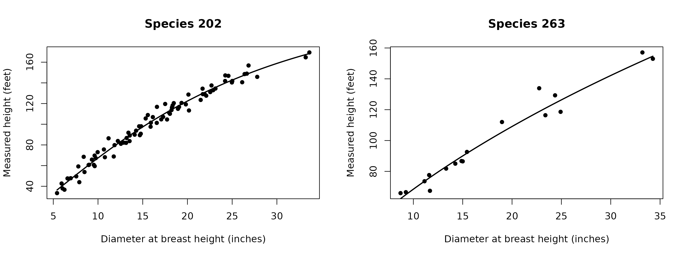

Height fitting supplies missing total heights while preserving
measured heights for subsequent stem calculations.
fit_height() fits a relationship to diameter and species,
with optional group adjustments for plots or other sampling groups.
Diameters enter in inches, and measured and predicted heights use
feet.
The Pacific Northwest example includes measured heights and stored predictions. Replacing only its predicted heights creates the same fitting inputs used to prepare the shipped list. The plot grouping must also match to reproduce those predictions.
Which heights were measured?
## Attach the calculation and data tools
library(merchandiser)
library(dplyr)
## Retain measurements and remove stored predictions before fitting
trees <- example_trees_pnw %>%
mutate(ht_observed = if_else(ht_status == 'predicted', NA_real_, ht))| ht_status | trees (count) |
|---|---|
| measured | 100 |
| predicted | 200 |
The list contains 100 measured heights, which supply the observations for fitting. Missing heights are prediction targets rather than observations used in the fit.
How is the relationship fitted?
The default Chapman-Richards form is fitted with a pooled
relationship and species relationships where enough observations are
available. min_n controls the minimum sample for a species
fit. Species fits that cannot be estimated fall back to the pooled
relationship, and the fitted object records those choices.
## Refit using the same plot groups as the shipped predictions
height_fit <- fit_height(dbh = trees$dbh,
ht = trees$ht_observed,
spcd = trees$spcd,
group = trees$plot)
#> Warning: fit_height(): 200 rows with missing or nonfinite dbh, ht, spcd, or
#> group were omitted.The warning reports omitted rows because the deliberately blanked heights cannot contribute observations to fitting.
Measured heights used by the fit
| diameter (inches) | height (feet) | species code | group |
|---|---|---|---|
| 25.01 | 141.8 | 202 | PNW-01 |
| 6.71 | 47.3 | 202 | PNW-04 |
| 14.82 | 98.0 | 202 | PNW-07 |
| 6.04 | 37.9 | 202 | PNW-10 |
| 7.80 | 59.2 | 202 | PNW-03 |
| 24.21 | 141.8 | 202 | PNW-06 |
| 15.57 | 108.9 | 202 | PNW-09 |
| 18.94 | 114.9 | 202 | PNW-02 |
| 22.75 | 133.9 | 263 | PNW-05 |
| 15.00 | 86.5 | 263 | PNW-08 |
| 33.22 | 164.7 | 202 | PNW-01 |
| 17.95 | 111.2 | 202 | PNW-04 |
| 18.27 | 116.2 | 202 | PNW-07 |
| 14.68 | 89.4 | 202 | PNW-10 |
| 13.32 | 81.8 | 263 | PNW-03 |
| 12.87 | 82.2 | 202 | PNW-06 |
| 9.96 | 73.0 | 202 | PNW-09 |
| 18.47 | 120.4 | 202 | PNW-02 |
| 22.69 | 137.5 | 202 | PNW-05 |
| 17.07 | 104.7 | 202 | PNW-08 |
| 6.95 | 47.8 | 202 | PNW-01 |
| 17.28 | 107.1 | 202 | PNW-04 |
| 33.63 | 169.4 | 202 | PNW-07 |
| 26.83 | 156.8 | 202 | PNW-10 |
| 19.82 | 119.2 | 202 | PNW-03 |
| 17.51 | 119.6 | 202 | PNW-06 |
| 7.91 | 44.0 | 202 | PNW-09 |
| 7.57 | 49.6 | 202 | PNW-02 |
| 18.98 | 112.0 | 263 | PNW-05 |
| 24.36 | 129.3 | 263 | PNW-08 |
| 9.63 | 59.5 | 202 | PNW-01 |
| 11.13 | 73.6 | 263 | PNW-04 |
| 6.59 | 47.6 | 202 | PNW-07 |
| 9.00 | 60.8 | 202 | PNW-10 |
| 8.49 | 53.8 | 202 | PNW-03 |
| 14.26 | 93.8 | 202 | PNW-06 |
| 11.68 | 67.4 | 263 | PNW-09 |
| 13.40 | 91.8 | 202 | PNW-02 |
| 8.95 | 60.6 | 202 | PNW-05 |
| 9.53 | 60.7 | 202 | PNW-08 |
| 14.25 | 85.0 | 263 | PNW-01 |
| 11.76 | 68.8 | 202 | PNW-04 |
| 6.25 | 36.7 | 202 | PNW-07 |
| 17.72 | 104.6 | 202 | PNW-10 |
| 24.92 | 118.6 | 263 | PNW-03 |
| 21.69 | 134.4 | 202 | PNW-06 |
| 9.62 | 69.7 | 202 | PNW-09 |
| 13.20 | 86.7 | 202 | PNW-02 |
| 5.42 | 33.4 | 202 | PNW-05 |
| 26.39 | 148.5 | 202 | PNW-08 |
| 15.88 | 97.6 | 202 | PNW-01 |
| 16.13 | 106.9 | 202 | PNW-04 |
| 16.59 | 116.8 | 202 | PNW-07 |
| 11.60 | 77.6 | 263 | PNW-10 |
| 15.91 | 101.5 | 202 | PNW-03 |
| 11.18 | 86.4 | 202 | PNW-06 |
| 13.14 | 82.0 | 202 | PNW-09 |
| 8.70 | 65.9 | 263 | PNW-02 |
| 24.97 | 140.4 | 202 | PNW-05 |
| 9.24 | 66.5 | 263 | PNW-08 |
| 9.75 | 67.2 | 202 | PNW-01 |
| 12.56 | 81.1 | 202 | PNW-04 |
| 18.22 | 113.7 | 202 | PNW-07 |
| 14.10 | 89.9 | 202 | PNW-10 |
| 11.85 | 79.8 | 202 | PNW-03 |
| 21.48 | 123.5 | 202 | PNW-06 |
| 21.72 | 129.1 | 202 | PNW-09 |
| 19.34 | 120.6 | 202 | PNW-02 |
| 26.12 | 140.6 | 202 | PNW-05 |
| 22.10 | 127.6 | 202 | PNW-08 |
| 23.13 | 134.5 | 202 | PNW-01 |
| 15.43 | 92.6 | 263 | PNW-04 |
| 8.40 | 68.5 | 202 | PNW-07 |
| 34.27 | 153.0 | 263 | PNW-10 |
| 14.88 | 86.7 | 263 | PNW-03 |
| 5.93 | 42.7 | 202 | PNW-06 |
| 24.58 | 146.8 | 202 | PNW-09 |
| 20.11 | 128.7 | 202 | PNW-02 |
| 22.87 | 132.9 | 202 | PNW-05 |
| 26.64 | 148.9 | 202 | PNW-08 |
| 23.38 | 116.4 | 263 | PNW-01 |
| 24.23 | 147.2 | 202 | PNW-04 |
| 10.66 | 75.6 | 202 | PNW-07 |
| 20.17 | 113.3 | 202 | PNW-10 |
| 10.77 | 68.1 | 202 | PNW-03 |
| 9.32 | 65.8 | 202 | PNW-06 |
| 12.22 | 83.8 | 202 | PNW-09 |
| 14.78 | 90.8 | 202 | PNW-02 |
| 18.04 | 110.1 | 202 | PNW-05 |
| 22.55 | 131.1 | 202 | PNW-08 |
| 18.34 | 118.1 | 202 | PNW-01 |
| 21.93 | 129.0 | 202 | PNW-04 |
| 14.60 | 98.0 | 202 | PNW-07 |
| 27.80 | 145.8 | 202 | PNW-10 |
| 15.33 | 105.6 | 202 | PNW-03 |
| 13.53 | 83.7 | 202 | PNW-06 |
| 13.55 | 89.1 | 202 | PNW-09 |
| 33.21 | 157.1 | 263 | PNW-02 |
| 19.06 | 116.7 | 202 | PNW-05 |
| 16.57 | 101.3 | 202 | PNW-08 |
These are the 100 measured rows retained for the fitted curves.

The fit uses 100 retained observations, shown against the fitted diameter-height relationships. The plot displays the data used by the model, so missing height rows are absent.
The available forms are Chapman-Richards, Curtis, Wykoff, Näslund, and Schumacher. The chosen form remains part of the fitted object. Group adjustments describe shared departures within the supplied groups, and do not replace the species relationship.
The fitted object retains the observations, species sample counts, fixed coefficients, variance components, and group effects. These records distinguish a separately fitted species relationship from one using the pooled model.
Do the completed heights match?
complete_heights() preserves measured heights on rows
with valid diameter, height, and species inputs, and fills nonfinite
heights using the supplied fit. An invalid diameter or species code can
also replace a finite measured height with a missing value and a
warning. Passing the existing fit avoids fitting again when completing
another list from the same sampling groups.
## Fill missing heights with conditional plot predictions
trees <- trees %>%
mutate(ht_completed = complete_heights(dbh = dbh,
ht = ht_observed,
spcd = spcd,
group = plot,
fit = height_fit))
## Compare completed heights with the original stored values
comparison <- trees %>%
group_by(ht_status) %>%
summarize(trees = n(), max_difference = max(abs(ht_completed - ht)))| ht_status | trees (count) | maximum difference (feet) |
|---|---|---|
| measured | 100 | 0 |
| predicted | 200 | 0 |
The maximum difference is 0 feet, confirming that the refitted, plot-adjusted predictions reproduce the shipped heights to the displayed precision.
Completing the heights does not alter diameter, species, or plot identifiers.
What do the prediction intervals include?
predict_height() uses conditional group adjustments by
default. An absent or unseen group uses the population relationship,
while re_form = 'population' requests population
predictions explicitly. A species absent from the fitted species mapping
returns a missing prediction with a warning.
Prediction intervals simulate group variation and residual error around the fitted relationship. For a known group, simulation centers its adjustment on the fitted group effect. The intervals hold fitted coefficients fixed, exclude coefficient uncertainty and inventory sampling uncertainty, and constrain their lower endpoints to breast height. They describe height predictions under the fitted model rather than uncertainty in an inventory total.
## Select prediction targets for an interval comparison
targets <- trees %>%
filter(ht_status == 'predicted') %>%
slice_head(n = 4)
## Predict heights and repeatable intervals for the selected plots
intervals <- predict_height(fit = height_fit,
dbh = targets$dbh,
spcd = targets$spcd,
group = targets$plot,
interval = TRUE,
seed = 12)| tree_id | fit (feet) | lower (feet) | upper (feet) |
|---|---|---|---|
| 2 | 70.229 | 61.224 | 78.791 |
| 3 | 81.273 | 71.668 | 90.101 |
| 5 | 173.681 | 156.561 | 192.661 |
| 6 | 67.614 | 59.521 | 76.435 |
The first target has a conditional height estimate of 70.229 feet.